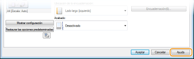
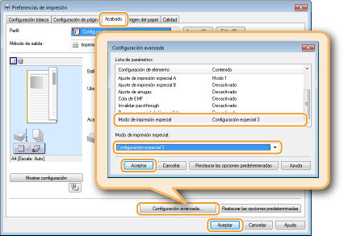

0KXF-010
Puede imprimir documentos creados con aplicaciones en su ordenador utilizando el controlador de impresora. El controlador de impresora cuenta con opciones muy útiles, como ampliación/reducción e impresión póster, que le permiten imprimir sus documentos de varias formas distintas. Antes de poder utilizar estas funciones, deberá instalar el controlador de impresora en su ordenador y completar otros preparativos. Para obtener más información, consulte Guía de instalación del controlador de impresora.

|
|
|
En función del sistema operativo y del tipo o la versión del controlador de impresora que utilice, las pantallas del controlador de impresora de este manual pueden diferir de las suyas.
|
|
CONSEJOS
|
||||||
|
Mostrar la ayuda del controlador de impresora
Si hace clic en [Ayuda] en la pantalla del controlador de impresora, aparecerá la pantalla Ayuda. En esta pantalla puede ver información detallada que no se incluye en el e-Manual.
 Impresión silenciosa
Si le molesta el ruido que hace el equipo al imprimir, puede rebajarlo seleccionando el modo silencioso. Tenga en cuenta que si imprime en el modo silencioso, la velocidad de la impresión disminuirá.
* El modo silencioso solo se activa si se cumplen las dos condiciones siguientes.
Se utiliza papel de tamaño A4, Legal, Carta o tamaño de papel personalizado de 7,48 in (190,0 mm) o más de anchura y de 10,69 in (271,4 mm) o más de longitud.
Si [Tipo de papel] está establecido en [Normal] o [Normal L]. Operaciones básicas de impresión
 Imprimir siempre en el modo silencioso Imprimir siempre en el modo silenciosoPuede configurar el modo silencioso en el equipo para que siempre se imprima con este modo. Cambie la configuración del equipo en la Ventana Estado de la impresora.
Imprimir en modo silencioso solo determinadas impresionesEspecifique el modo silencioso en el controlador de impresora cuando escoja las opciones de impresión. Consulte la impresión básica utilizando el controlador de impresora en Operaciones básicas de impresión.
Pestaña [Acabado]
 |